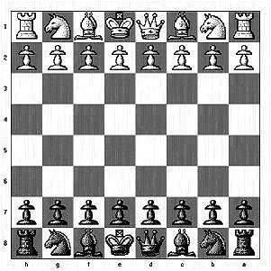

【问题描述】
一个笼子里面关了鸡和兔子（鸡有2 只脚，兔子有4 只脚，没有例外）。已知笼子里面脚的总数a，问笼子里面至少有多少只动物，至多有多少只动物？
【输入数据】
第1 行是测试数据的组数n，后面跟着n 行输入。每组测试数据占1 行，包括一个正整数a (a < 32768)。
【输出要求】
n 行，每行输出对应一个输入。输出是两个正整数，第一个是最少的动物数，第二个是最多的动物数，两个正整数用空格分开。如果没有满足要求的情况出现，则输出2 个0。
【输入样例】
2
3
20
【输出样例】
0 0
5 10
由于鸡有2 只脚，兔子有4 只脚，因此笼子里面脚的总数一定是个偶数。如果有奇数只脚，则输入不正确。即没有满足要求的情况出现，则输出2 个0。
当a是偶数时，若要动物数目最少，则应使动物尽量有4 只脚，而要动物数目最多，则应使动物尽量有2 只脚。因此本题无需用循环穷举，只需按上面的分析找到相应的计算式子即可。
如果总脚数a 是4 的倍数，则动物最少数目为a / 4（全部为兔子），最多为a / 2（全部为鸡）。
如果总脚数a 不是4 的倍数，则动物最少数目为a/4+1（除1只鸡外，其余全部为兔子），最多为a / 2（全部为鸡）。
因此，编写一个简单的选择结构实现相应的判断和计算输出就可以了。
#include <stdio.h>
int main()
{
int n,i,a;
scanf("%d",&n);
while (n--)
{
scanf("%d",&a);
if (a%2!=0)
printf("0 0\n");
else if (a % 4!=0)
printf("%d %d\n",a/4+1,a/2);
else
printf("%d %d\n",a/4,a/2);
}
return 0;
}
本题选自洛谷题库 （https://www.luogu.org/problem/P1348）
【题目描述】
任何一个整数N都能表示成另外两个整数a和b的平方差吗？如果能，那么这个数N就叫做Couple number。你的工作就是判断一个数N是不是Couple number。
【输入格式】
仅一行，两个长整型范围内的整数n1和n2，之间用1个空格隔开。
【输出格式】
输出在n1到n2范围内有多少个Couple number。
注意：包括n1和n2两个数，且n1<n2，n2 - n1 <= 10 000 000。
【输入样例】
1 10
【输出样例】
7
（1）编程思路。
本题的关键问题是如何判断一个数N是不是Couple number。
设N=a2-b2，则N=(a+b)(a-b)
由于a，b均为整数，则a+b与a-b的奇偶性一定相同。
如果a+b是奇数，奇数乘奇数一定是奇数，因此N一定是奇数。
如果a+b是偶数，偶数乘偶数一定是4的倍数，因此N也一定是4的倍数。
由此可知，Couple number要么是奇数，要么是4的倍数。
反过来，一个奇数或一个4的倍数的数是否一定是Couple number呢？我们可以很简单地构造出a和b来。
若N是奇数，可设N=2k-1 （k是整数）。可取a=k,b=k-1，则N= a2-b2=(a+b)(a-b)=2k-1。
若N是4的倍数，可设N=4k （k是整数）。可取a=k+1,b=k-1，则N= a2-b2=(a+b)(a-b)=4k。
若N是偶数但不是4的倍数，可设N=2k （k为奇数），则N无论如何分解因数，一定只能分解为一个偶数和一个奇数相乘，这样(a+b)与(a-b)中一定一个为奇数，另一个为2的奇数倍。但是(a+b)和(a-b)同奇偶性，因此N无法表示成两个整数a和b的平方差。
（2）源程序。
#include <stdio.h>
int main()
{
int n1,n2,i,cnt=0;
scanf("%d%d",&n1,&n2);
for (i=n1;i<=n2;i++)
if (i%2!=0 || i%4==0)
cnt++;
printf("%d\n",cnt);
return 0;
}
本题选自HDU OJ （http://acm.hdu.edu.cn/showproblem.php?pid=2092）
Problem Description
有二个整数，它们加起来等于某个整数，乘起来又等于另一个整数，它们到底是真还是假，也就是这种整数到底存不存在，实在有点吃不准，你能快速回答吗？看来只能通过编程。
例如：
x + y = 9，x * y = 15 ? 找不到这样的整数x和y
1+4=5，1*4=4，所以，加起来等于5，乘起来等于4的二个整数为1和4
7+(-8)=-1，7*（-8）=-56，所以，加起来等于-1，乘起来等于-56的二个整数为7和-8
Input
输入数据为成对出现的整数n，m（-10000<n,m<10000），它们分别表示整数的和与积，如果两者都为0，则输入结束。
Output
只需要对于每个n和m，输出“Yes”或者“No”，明确有还是没有这种整数就行了。
Sample Input
9 15
5 4
1 -56
0 0
Sample Output
No
Yes
Yes
（1）编程思路。
设 x+y=n x*y=m，可得 x*(n-x)=m x2-nx+m=0
求解这个以x为未知数的一元二次方程。
令 dlt=n2-4m，
若dlt<0，则方程无实根，x和y更不可能为整数，因此，输出“No”。
若dlt==0，可求得x=y=n/2，且x和y均为整数，因此，输出“Yes”。
若dlt>0，根据一元二次方程求根公式求得方程两个实根x1和x2（这两个实根不一定是整数），且取整数分别赋给x和y。若满足x+y==n且 x*y==m，则输出“Yes”，否则输出“No”。
（2）源程序。
#include <stdio.h>
#include <math.h>
int main()
{
int n,m,dlt,x,y;
while (1)
{
scanf("%d%d",&n,&m);
if (n==0 && m==0) break;
dlt=n*n-4*m;
if (dlt<0)
printf("No\n");
else if (dlt==0)
printf("Yes\n");
else
{
x=(n+(int)sqrt(1.0*dlt))/2;
y=(n-(int)sqrt(1.0*dlt))/2;
if (x+y==n && x*y==m)
printf("Yes\n");
else
printf("No\n");
}
}
return 0;
}
本题选自北大POJ （http://poj.org/problem?id=1657）
Description
国际象棋的棋盘是黑白相间的8 * 8的方格，棋子放在格子中间。如下图所示：

王、后、车、象的走子规则如下：
王：横、直、斜都可以走，但每步限走一格。
后：横、直、斜都可以走，每步格数不受限制。
车：横、竖均可以走，不能斜走，格数不限。
象：只能斜走，格数不限。
写一个程序，给定起始位置和目标位置，计算王、后、车、象从起始位置走到目标位置所需的最少步数。
Input
第一行是测试数据的组数t（0 <= t <= 20）。以下每行是一组测试数据，每组包括棋盘上的两个位置，第一个是起始位置，第二个是目标位置。位置用"字母-数字"的形式表示，字母从"a"到"h"，数字从"1"到"8"。
Output
对输入的每组测试数据，输出王、后、车、象所需的最少步数。如果无法到达,就输出"Inf".
Sample Input
2
a1 c3
f5 f8
Sample Output
2 1 2 1
3 1 1 Inf
（1）编程思路。
本题给定一个棋盘上的起始位置和终止位置，分别判断王、后、车、象从起始位置到达终止位置需要的步数。
首先，王、后、车、象彼此独立，分别考虑就可以了。分析王、后、车、象的行走规则特点，从而推出它们从起点到终点的步数。
假设起始位置与终止位置在水平方向上的距离是 x，它们在竖直方向上的距离是y。
根据王的行走规则，它可以横、直、斜走，每步限走一格，所以需要的步数是min(x,y)+abs(x-y)。即x，y 中较小的一个加上x 与y 之差的绝对值。
根据后行走的规则，它可以横、直、斜走，每步格数不受限制，所以需要的步数是1（x 等于y 或者 x 等于0 或者 y 等于0）或者2(x 不等于y)。
根据车行走的规则，它可以横、竖走，不能斜走，格数不限，需要步数为1（x 或者y 等于0）或者2(x 和y 都不等于0)。
根据象行走得规则，它可以斜走，格数不限。棋盘上的格点可以分为两类，第一类是它的横坐标和纵坐标之差为奇数，第二类是横纵坐标之差为偶数。对于只能斜走的象，它每走一步，因为横纵坐标增加或减小的绝对值相等，所以横坐标和纵坐标之差的奇偶性无论如何行走都保持不变。因此，上述的第一类点和第二类点不能互相到达。如果判断出起始点和终止点分别属于两类点，就可以得出它们之间需要无数步的结论。如果它们属于同一类点，象从起始点走到终止点需要1（x 的绝对值等于y 的绝对值）或者2（x 的绝对值不等于y 的绝对值）。
（2）源程序。
#include <stdio.h>
#include <math.h>
int main()
{
int n;
char begin[5], end[5]; // 用 begin 和 end 分别存储棋子的起止位置
int x, y;
scanf("%d", & n);
while( n--)
{
scanf("%s %s", begin, end);
x = abs(begin[0] - end[0]);
y = abs(begin[1] - end[1]);
if(x == 0 && y == 0)
printf("0 0 0 0\n"); // 起止位置相同，所有棋子都走0步
else{
if(x < y)printf("%d",y); //王的步数
else printf("%d",x);
if(x == y || x == 0 || y == 0) printf(" 1"); //后的步数
else printf("2");
if(x == 0 || y == 0) printf(" 1"); //车的步数
else printf(" 2");
if(abs(x-y) % 2 != 0) printf(" Inf\n"); //象的步数
else if(x == y) printf(" 1\n");
else printf(" 2\n");
}
}
return 0;
}